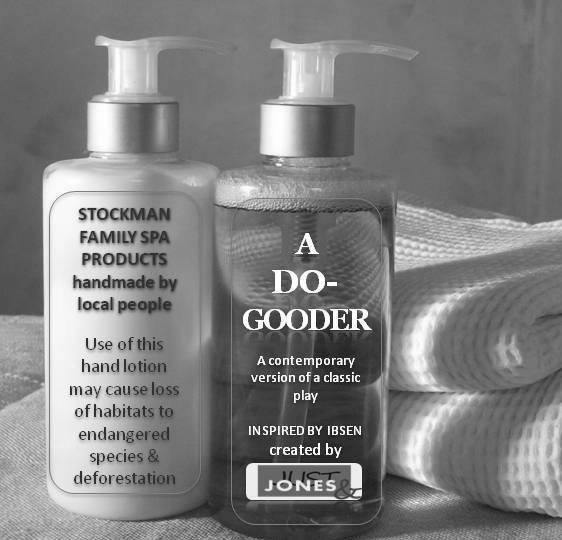

Ibsen in adaptation with Rebecca Manson Jones - 5 days
- Dato:
- 15.04.2013 til 19.04.2013
- Start kl :
- 10:00
- Slutt kl :
- 16:00
- Pris:
- 900,-
- Adresse:
- Norsk Skuespillersenter, Welhavensgate 1, Oslo
 Theatre director Rebecca Manson Jones (UK) and her company Just Jones & have been awarded one of the four international Ibsen Scholarships 2012 for their innovative approach to staging Ibsen's An Enemy of the People. You can take part in a key stage of their research and development!
{kind=link}
The workshop will be held in English. We encourage both male and female actors to apply, since we need both genders to succesfully distribute the parts in the play.
About the workshop
Can Ibsen inspire modern theatre makers? How do you adapt Ibsen to a contemporary setting? What demands does a contemporary adaptation of Ibsen place on the actors? Do the moral dilemmas in Ibsen's plays ring true in contemporary society? And how do british theatre makers work on Ibsen? Join Rebecca Manson Jones for a week of experimenting, discovering and learning, as she shares from her long experience in British theatre, and delves deep into her new version of Ibsen's Enemy of the people.
The workshop will involve some work with text, improvisation and devising around the characters and situation, exploration of the community chorus which inhabits the world of the play and experimenting with form to create alternative endings based on the outcome of an audience vote.
Feedback from previous workshop participants
"Working with Rebecca has enriched my process as an actor."
"I think the main things I took away were: The strong sense of ensemble working - the cohesive and inclusive nature of discussion - and the strong emphasis on improvising around the text - using the script as a vaulting platform to discover character nuances."
About A Do-Gooder
The project A Do-Gooder is a new contemporary interactive production of An Enemy of the People created for presentation in non-traditional theatre spaces exploring individual responsibility as citizen in a community and citizen of the world. In this adaptation the audience will vote in the public meeting, determining the outcome of the play. The workshop will explore the voting and the potential different endings.
In Just Jones &’s version, Stockman’s inspiration to open a health spa as a fair-trade partnership built on co-operative principles to give the workers in the UK and their international trading partners in Indonesia a real share in the proceeds, has injected a lot of optimism into an economically moribund community.
The production examines consumerism, environmentalism, ethical trading and local government and asks to consider the real costs of our lifestyle. The project examines the statement “the majority is always wrong” in the context of a political system under scrutiny. Read more here: A do gooder Oslo info
About Just Jones &
Just Jones & was founded by Rebecca Manson Jones in 2011 to create powerful, accessible theatrical work for people who like entertainment to provoke as well as transport them. The company is a firm believer in the transformational possibilities of theatre, in the excitement of live cultural debate and importance of touring culture. For more information, see Just Jones &.
Statement from the Ibsen scholarship jury
"A Do-Gooder (...) focuses on issues that are in Ibsen’s original such as the responsibility of the individual and the attitudes of a society that seeks to uphold narrow self interests in contrast to social responsibility. The protagonist of the play will be transformed into a woman. The idea behind the production, which will tour Britain, is an attempt to combine interpretations of theatrical classics with the challenge of contemporary theatre. The company has previously done this with among others another Ibsen play – A Doll’s House, as well as with Molière’s Le Malade imaginaire. The Jury is particularly impressed with the focus and inventiveness of the production, and that it involves a learning process through the organisation of interactive workshops."
Read more here.
{kind=link}
Rebecca Manson Jones - Artistic Director
Studied French and German at Oxford University and French and Drama at University of London/Central School. Directing credits include: A Doll’s House and Beyond Nora all at Exeter Northcott; Romeo and Juliet (Bridewell); Romeo og Julie (Odense, Denmark) Judith Bloom (Southwark Playhouse); Frontline – new plays, new directions (Soho); The Circle Line (Old Vic, New Voices); Associate Director for ATC – (Macbeth false memory, The Tempest) New Writing Associate, Churchill Theatre Bromley. Freelance consultancy work for Ambassadors Theatre Group, Royal Court Theatre, Theatre Centre (script reader for Brian Way award), Donmar Theatre and Theatre Museum. Literary Panelist and new writing workshops for Soho Theatre. Rebecca is a founder member of the Brockley Design Project and a Trustee for the Oily Cart Company.
Pris for medlemmer av NSF: 800,-
{kind=link}